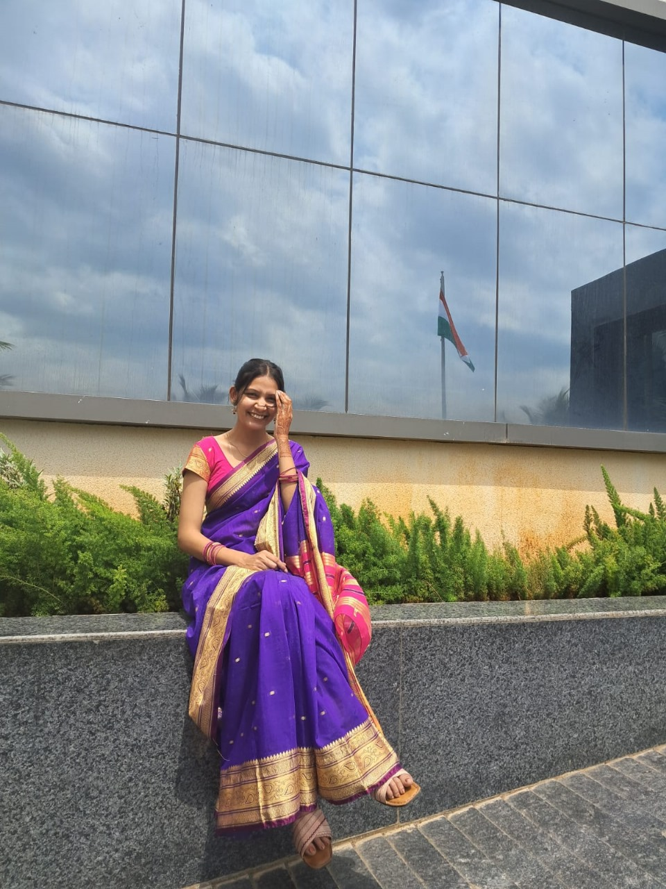
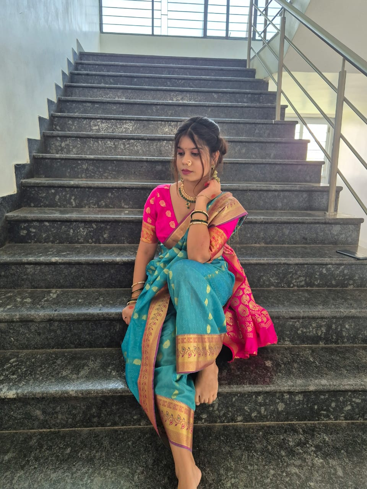
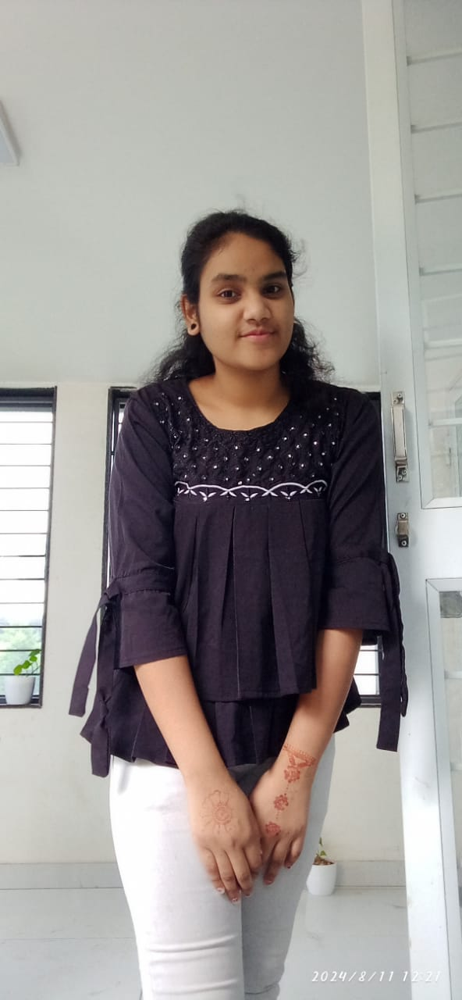

The Counsils refers to multiple groups or bodies of people who meet to
discuss, deliberate, or make decisions on specific matters, as
described earlier.
The Student Council at Navgurukul Pune plays an important role in
representing the student body and organizing events that promote
learning and collaboration.
English facilitator

Priya Sharma
Identify the English proficiency levels of all students. Conduct assessments to accurately determine students' reading, writing, speaking, and listening skills.
Induction Facilitator

Tanuja Kumawat
Practice key principles in action and Clearly explain key principles to new students. Ensure that students understand and follow the practices of these principles. Conduct evaluations to assess students' understanding of key principles after buddy explanations.
Health Coordinator
Richa Jha
Develop protocols for seasonal illnesses and health emergencies. Form and lead a crisis response team if needed. Design and Ensure clear communication during health emergencies.
Disciplin Coordinator

Zoha Qureshi
ensuring discipline on campus by maintaining academic schedules, resolving conflicts, enforcing campus rules, and promoting a respectful learning environment.
Life Skill Coach
Rutika Bombekar
To foster a vibrant and engaging campus environment by bringing interesting experiences that can build student’s life skills that align with the institution’s core beliefs and principles. Maintaining culture, tracking student life skills/soft skills, and Following the Team of team principal to invite a lot of experts to build life skills
It Coordinator

Snehalata Yadav
The IT Specialist is responsible for managing laptop-related matters on campus, maintaining inventory, addressing policy violations, and ensuring the functionality of technological resources.TNP
Chandani Patre
The Training and Placement Facilitator plays a crucial role in ensuring students' academic success and placement vision of students. This role involves overseeing students' academic progress, implementing key learning principles, and creating a supportive atmosphere for continuous growth and development.
Kitchen Coordinator
Prachi Kurwale
The Kitchen Coordinator is responsible for overseeing all kitchen operations, ensuring the preparation and delivery of healthy and nutritious meals to students and staff. This role includes managing kitchen staff, maintaining high standards of cleanliness and food safety, and ensuring efficient kitchen workflows.
Workout Coordinator
Prajakta
The Workout Coordinator is responsible for promoting physical fitness and well-being among students by organizing and leading various workout sessions. This role involves creating a balanced workout schedule, encouraging participation, and ensuring that fitness activities are safe, engaging, and beneficial for all participants.